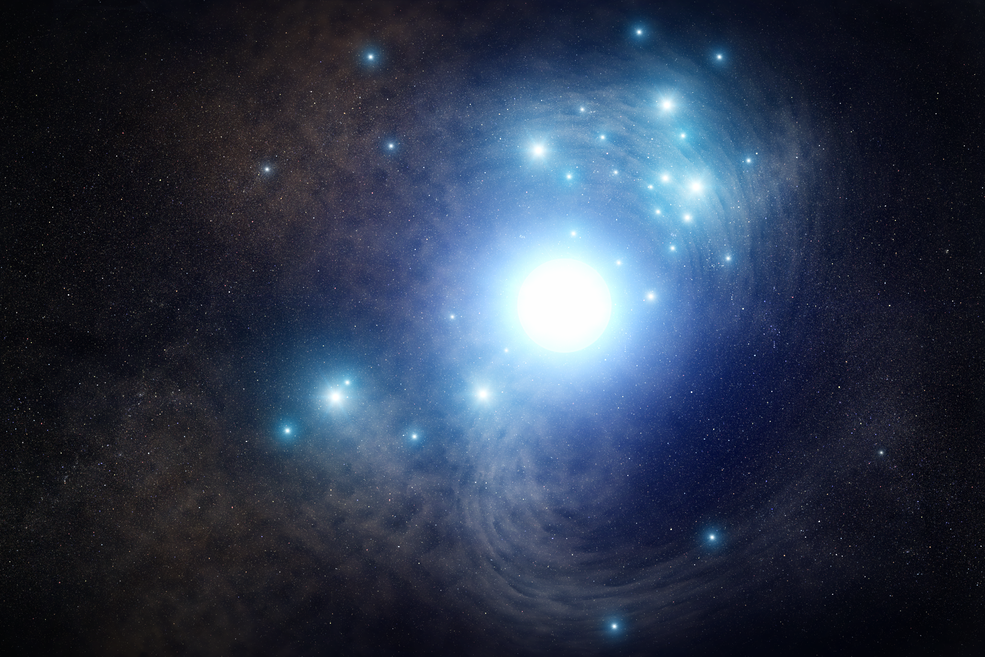

The supergiants are the most massive stars out there, ranging between 10 to 70 solar masses, and can range in brightness from 30,000 to hundreds of thousands of times the output of the Sun. There are two types which are: red and blue. They have very short lifespans, living from 30 million down to just a few hundred thousand years. Supergiants seem to always detonate as Type II supernovae at the end of their lives.
Red Supergiant
These are stars with many times the mass of the Sun, and one of the best-known examples is Betelgeuse, in the constellation of Orion. The Betelgeuse star has 20 times the mass of the Sun, and puts out about 135,000 times as much energy as the Sun. It’s one of the few stars that have ever had their disk imaged; astronomers estimate that it’s 1,000 times the radius of the Sun. With that size, Betelgeuse would engulf the orbits of Mars and Jupiter in our Solar System.
Astronomers guess that Betelgeuse is only 8.5 million years old, and they expect that it will detonate as a supernova within the next 1000 years or so. When it does finally go off, the supernova explosion will be as bright as the Moon in the night sky.
Blue Supergiant
Blue supergiants are much hotter than their red counterparts. A good example of a blue supergiant is Rigel, also in the Orion constellation. Rigel has a 17 times the mass of the Sun, and 66,000 times the luminosity of the Sun – it’s the most luminous star in the neighborhood. It’s not as large as a red supergiant, with only 62 times the radius of the Sun.